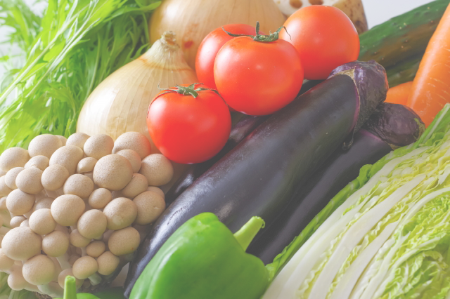
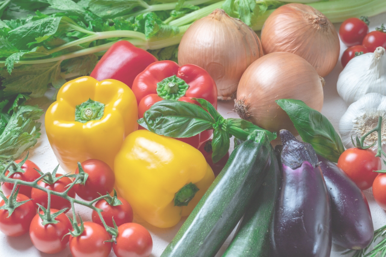

新鮮で安心の無農薬野菜
朝どりオーガニック野菜をご自宅で
スグ食べとは
厳選したオーガニック農家さんの穫れたて野菜を販売しています。 食材から選べるのはもちろん、生産者からも選べます。 生産方法や生産地、それぞれ異なるこだわりで、お気に入りの農家さんを見つけてくださ い。最短で24時間以内に届く新鮮なオーガニック野菜宅配サービスです。
新鮮で安心の無農薬野菜
朝どりオーガニック野菜をご自宅で
厳選したオーガニック農家さんの穫れたて野菜を販売しています。 食材から選べるのはもちろん、生産者からも選べます。 生産方法や生産地、それぞれ異なるこだわりで、お気に入りの農家さんを見つけてくださ い。最短で24時間以内に届く新鮮なオーガニック野菜宅配サービスです。

「なるべく収穫したばかりの状態で、 野菜を味わって欲しい。」スグ食べで は、既存の産地直送サービスのように 箱詰め用の倉庫を介すことはありませ ん。農家が収穫したその日に、お客様 の元へ直送で野菜をお送りします。

出品している生産者は、有機栽培もし くは自然栽培の農家のみ。全ての商品 が無農薬・無化学肥料など、安全にこ だわって生産された「オーガニック農 作物」です。そのため、どの商品も安 心してお買い求めいただけます。

年間数十種の野菜を作る生産者か ら、今が旬の多様な野菜が届きま す。スグ食べでは生産者ごとに商 品が異なります。中には年間100 種類もの多品種生産をしている生 産者も。旬な野菜はもちろん、珍 しい野菜とも出会えます。
まずは、お試しに食べてみませんか？
1 回限り！少量お試しセット￥1,280 （税込 / 送料別）
生産者 ： 千葉県 松戸市 ベジックス
￥1,280 （税込 / 送料別）
生産者 ： 長野県 飯田市 くちぶえ農園
こんな農家さんが登録しています
ひだまり農場（岡山県）山田洋一
「ひだまり農場」では栽培期間中に農薬・化学肥料を一切使用せず、年間100種類の野菜と米、卵を生産しています。水肥・肥料もすべて手作りし、有機質のものを使用しています。
爽緑農園（福井県）太田紘一
「爽緑農園」では農薬や除草剤は一切使用せず、一つ一つのお野菜を丁寧に栽培しています。
お日様の光をたくさん浴びて育ったお野菜は、葉や皮まで余すことなく食べることができます。
通常の産直サービスは、一度倉庫などに野菜を集め、そこで箱詰め作業をして配送しています。この仕組みでは、お客様が商品を受け取る時には収穫してから3,4日が経過しています。スグ食べでは、箱詰め作業を農家さんにお願いすることにより、最短で収穫当日に商品を受け取ることができます。
有機栽培や自然栽培などの環境に配慮した農法で生産するには、通常以上に費用も手間もかかります。そんな中でも、「安心な野菜を食べて欲しい」という強い思いを持って、こだわって野菜を作っている農家さんがいます。 そういった、厳選されたオーガニック農家さんのみが登録しているため、安心してお買い物を楽しんでいただけます。
まずは、お試しに食べてみませんか？
1 回限り！少量お試しセット￥1,280 （税込 / 送料別）
生産者 ： 千葉県 松戸市 ベジックス
￥1,280 （税込 / 送料別）
生産者 ： 長野県 飯田市 くちぶえ農園